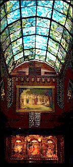
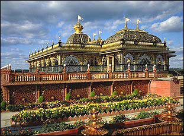

|
|
| SECTION GUIDE | |
|
·
|
Centres |
|
·
|
Devotee Projects |
|
·
|
Worldwide Home |
|
·
|
Home |
| New Vrindaban, West Virginia | |||
|
Type of centre: Temple/ Farm
Brief details of centre One of Srila Prabhupada's most cherished desires was to establish
the New Vrindaban Community in America. He spoke at great length
about building a replica of Vrindaban India, where there are seven
main temples. In 1968, The New Vrindaban Community was founded in
West Virginia to fulfill Prabhupada's dream of an ideal society
based on Krishna Consciousness, or love of God. When Prabhupada
set down the first guidelines for such a community, the idea seemed
out of reach to the small band of devotees struggling through a
hard winter on a small, rundown farm. There was no electricity,
no running water in their only building, a battered pioneer shack.
But when Srila Prabhupada had a vision of "seven temples on
the seven hills," suddenly all obstacles seemed insignificant
to his followers. By 1972, the community had expanded from 100 acres
to 500 acres. Sri Sri Radha Vrindaban Chandra Mandir, the main temple hall, is the main attraction of many wonderful attractions in the New Vrindaban Community and is usually the first stop for all visitors and pilgrims. Apart from the wonderful gardens, other attractions include a gift shop, an organic vegetable garden, snack bar, health shop, and Prabhupada's Palace of Gold. Deities Sri Sri Radha Vrndavana Candra Sri Jaganath Sri Gopal Nathaji Sri Sri Gaura-Nitai Sri Nrsimhadeva Facilities Prabhupada's Palace of Gold In 1973, the devotees decided to build a home for Srila Prabhupada, where he could write all his books and enjoy the clean country air. Devotees built Prabhupada's Palace as the first of the seven temples here; a project that took seven hard years. It immediately became the most famous Hare Krishna temple in North America. The Palace attracts millions of visitors and is an incredible place of pilgrimage in North America. Tours include ten elaborate marble rooms, gardens, man-made lakes with swans, sculpture, museum, gift shop and restaurant. New Vrindavan's Organic Garden Plans are ever expanding to incorporate oxen, a green house and new ways to reach out to and educate people. Vrindavan Dham GiftShop Located in Sri Sri Radha Vrndavana Candra's temple, carries a large variety of traditional Indian clothing. Many devotional items such as Deities and associated paraphernalia, including framed photographs, incense, japa beads and bead bags, artik items, books, Krishna Conscious tapes and CDs, and New Vrindaban souvenirs also available. Vrindavan-Dham Gifts has extended or additional hours on festivals or holidays to accommodate our guests. In addition, we carry a limited number of wall hangings and tapestries. Film and single use cameras are available for taking pictures of the deities or beautiful New Vrindaban. Hanuman's Health Shop Krishna's Attic has gently used traditional Indian clothing at a fraction of the price one would pay for brand new clothing. They also have American clothing, clothing for children and babies, household goods, kitchen items, toys, jewelry, small electronics, and many other items. Krishna's Attic is also accepts donations of gently used clothing and household items. Govinda's Snacks Whether you're coming to visit the Palace of Gold for the weekend, bringing the family for a Festival, or planning a week long retreat to New Vrindaban, we have the right accommodations to fit your needs. |